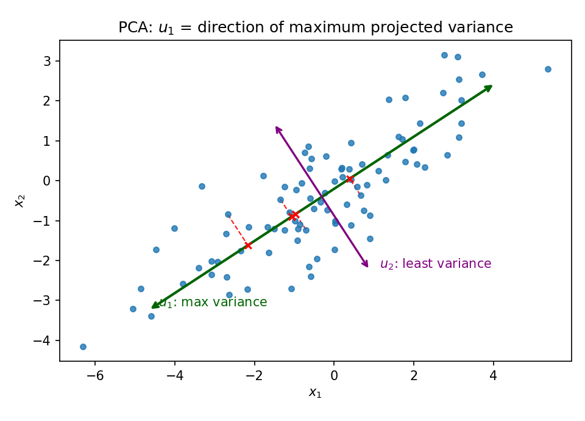
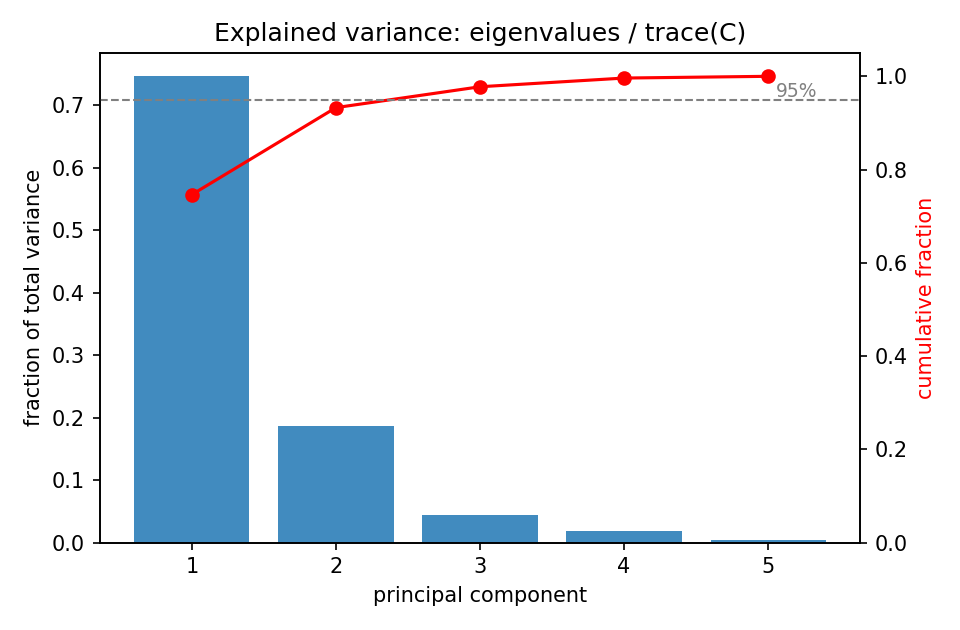
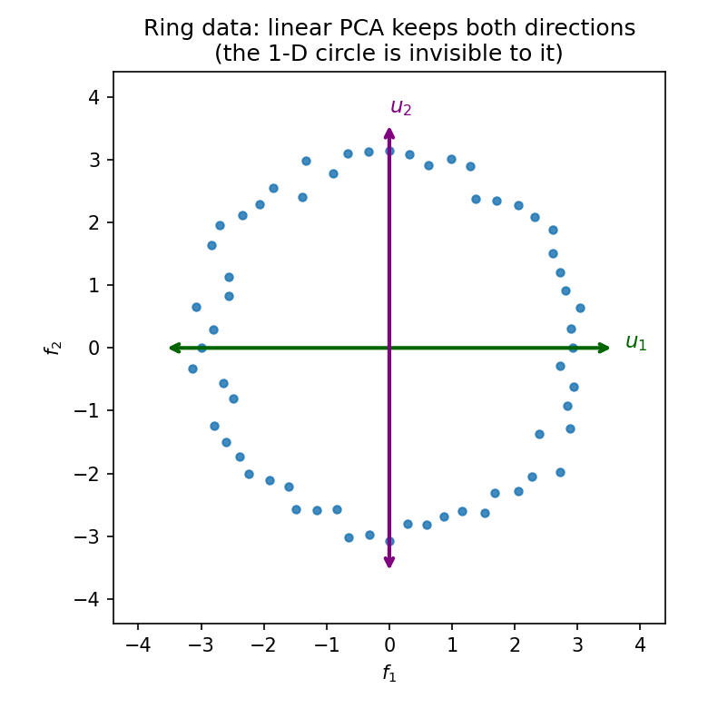

24. PCA: variance maximization, eigendecomposition, kernel PCA
Two promises converge here. §22.12 defined the reconstruction loss \(L(f, g) = \frac1n\sum_i \|g(f(\mathbf{x}^i)) - \mathbf{x}^i\|^2\) for an encoder–decoder pair and said the algorithm that searches all pairs is Chapter 24’s job. §23.11 added that the geometric reading of least squares — predictions as projections — returns here, except the “column space” is no longer given: it is learned from the data. This chapter is both promises kept. Everything in §§24.1–24.9 comes from the MLF Week 6 lectures “Principal Component Analysis” (Prof. Prashanth L A, IIT Madras) and the Week 6 tutorial; §§24.10–24.11’s kernel material comes from the MLT Week 2 slides. The headline, stated in the first lecture: PCA has two viewpoints — minimizing reconstruction error and maximizing variance of the projected data — and they are the same algorithm.
Notation. The lectures write data points with subscripts — \(x_1, \ldots, x_n\), \(x_i \in \mathbb{R}^d\) — kept through this chapter (a change from §22.6’s superscripts, flagged here so nothing is misread). The target dimension is \(m\), an input parameter fixed before the algorithm runs. The mean is \(\bar x = \frac1n\sum_{i=1}^n x_i\).
24.1 The problem: the best \(m\)-dimensional home for the data
Data. \(D = \{x_1, \ldots, x_n\}\), \(x_i \in \mathbb{R}^d\). No labels — this is unsupervised learning (§22.11).
Goal. Fix \(m < d\). Find the best \(m\)-dimensional subspace to project \(D\) onto — “best” in a sense made precise in §§24.3–24.4. Two things must be decided: (i) which subspace, (ii) how to project each point onto it.
The broad context. In ML-flavoured feature selection, you start by collecting as many features as you can — high-dimensional data — then reduce dimensionality to a good subset of features. PCA is the classic dimensionality-reduction method for this: project the data onto a lower-dimensional subspace chosen so that reconstruction error is minimized, or equivalently so that the variance of the projected data is maximized.
Basically, … “The data lives in a tall room. Pick the \(m\)-dimensional floor that fits it best, then drop every point straight down onto that floor.” PCA is the recipe for picking the floor.
24.2 The covariance matrix \(C\) — the only matrix that matters
PCA’s entire computation is the eigendecomposition of one matrix. Def (sample covariance). \[\boxed{C = \frac{1}{n}\sum_{i=1}^{n}(x_i - \bar x)(x_i - \bar x)^T}, \qquad C \in \mathbb{R}^{d \times d}.\] This is §19.1’s covariance matrix with the expectation replaced by the data average.
- Symmetric: \(C^T = C\) — each term \((x_i - \bar x)(x_i - \bar x)^T\) is symmetric.
- Positive semi-definite: for any \(u\), \(u^TCu = \frac1n\sum_i \big(u^T(x_i - \bar x)\big)^2 \ge 0\) — the same argument as §19.1’s theorem, and §7.9’s PSD fact.
- Spectral theorem applies (§6.11): all eigenvalues of \(C\) are real (and \(\ge 0\) by (ii)), and there is an orthonormal basis of eigenvectors \(\{u_1, \ldots, u_d\}\) with eigenvalues ordered \(\lambda_1 \ge \lambda_2 \ge \cdots \ge \lambda_d \ge 0\).
Basically, … \(C\) is the “spread table” of the data: diagonal = variance along each axis, off-diagonal = how pairs of axes vary together. PCA reads everything off this one table’s eigenvalues and eigenvectors.
24.3 First viewpoint: minimizing the reconstruction error
Fix a candidate \(m\)-dimensional subspace with orthonormal basis \(B = \{u_1, \ldots, u_m\}\); extend it to a full orthonormal basis \(B' = \{u_1, \ldots, u_m, u_{m+1}, \ldots, u_d\}\) of \(\mathbb{R}^d\). Every point expands as \(x_i = \sum_{j=1}^{d}(x_i^T u_j)\,u_j\) (orthonormal-basis coordinates, §5.4).
Def (reconstruction error). Approximate each point by \[\tilde x_i = \sum_{j=1}^{m} z_{ij}\,u_j + \sum_{j=m+1}^{d} \beta_j\,u_j\] and measure \[\boxed{J = \frac{1}{n}\sum_{i=1}^{n}\|x_i - \tilde x_i\|^2}.\] The coefficients \(z_{ij}, \beta_j\) are free — choose them to minimize \(J\).
The optimal coefficients. Because \(B'\) is orthonormal, cross terms vanish when the norm is expanded (the \(\|c_1u_1 + c_2u_2\|^2 = c_1^2 + c_2^2\) logic, applied \(d\)-wide): \[J = \frac{1}{n}\sum_{i=1}^{n}\left[\sum_{j=1}^{m}(x_i^T u_j - z_{ij})^2 + \sum_{j=m+1}^{d}(x_i^T u_j - \beta_j)^2\right].\] Each coefficient appears in exactly one square, so differentiating is trivial: - \(\frac{\partial J}{\partial z_{ij}} = 0 \;\Rightarrow\; \boxed{z_{ij} = x_i^T u_j}\) — the encoded coordinates are just dot products with the basis. - \(\frac{\partial J}{\partial \beta_j} = 0 \;\Rightarrow\; \boxed{\beta_j = \bar x^T u_j}\) — the mean’s dot product with each dropped direction.
So for the given subspace, the best reconstruction is \[\boxed{\tilde x_i = \sum_{j=1}^{m}(x_i^T u_j)\,u_j + \sum_{j=m+1}^{d}(\bar x^T u_j)\,u_j}.\]
Note (centered data). If the data is already centered (\(\bar x = 0\)) — “which is what usually people do when you do PCA,” per the lecture — the second term vanishes and \(\tilde x_i\) is simply the orthogonal projection onto the \(m\)-dimensional subspace.
The optimal error, in terms of \(C\). Since the first \(m\) terms cancel in \(x_i - \tilde x_i\), \[x_i - \tilde x_i = \sum_{j=m+1}^{d}\big((x_i - \bar x)^T u_j\big)\,u_j, \qquad \|x_i - \tilde x_i\|^2 = \sum_{j=m+1}^{d}\big((x_i - \bar x)^T u_j\big)^2\] (orthonormality again). Swapping the sums and writing the square as a product: \[J^* = \frac{1}{n}\sum_{i=1}^{n}\sum_{j=m+1}^{d}\big((x_i-\bar x)^T u_j\big)^2 = \sum_{j=m+1}^{d} u_j^T\underbrace{\left[\frac{1}{n}\sum_{i=1}^{n}(x_i-\bar x)(x_i-\bar x)^T\right]}_{C}\,u_j.\] \[\boxed{J^* = \sum_{j=m+1}^{d} u_j^T C u_j} \qquad \text{(best error for the subspace spanned by } u_1,\ldots,u_m\text{)}.\]
Basically, … “For a fixed floor, the best reconstruction keeps each point’s coordinates along the floor and replaces the lost coordinates with the mean’s. The leftover error is a sum of one quadratic form \(u^TCu\) per dropped direction.”
24.4 Second viewpoint: maximizing the variance of the projection
Totally different starting point. Project onto the line along a unit vector \(u\): point \(x_i\) goes to \((x_i^T u)\,u\), the projected mean to \((\bar x^T u)\,u\). The variance of the projected points: \[\frac{1}{n}\sum_{i=1}^{n}(x_i^T u - \bar x^T u)^2 = \frac{1}{n}\sum_{i=1}^{n}u^T(x_i-\bar x)(x_i-\bar x)^T u = \boxed{u^T C u}.\] The problem: maximize \(u^TCu\) subject to \(u^Tu = 1\).
Solution (Lagrangian). \(L(u, \lambda) = u^TCu + \lambda(1 - u^Tu)\); \(\frac{\partial L}{\partial u} = 2Cu - 2\lambda u = 0\) gives \(\boxed{Cu = \lambda u}\), and then \(u^TCu = \lambda\). The maximizer is an eigenvector of \(C\), and the maximum value is its eigenvalue — so pick the largest eigenvalue.
Note (the lecture’s calculus alternative). Maximize the ratio \(\frac{u^TCu}{u^Tu}\) unconstrained instead: differentiating with the quotient rule, \(\frac{\partial}{\partial u_{(i)}}\frac{u^TCu}{u^Tu} = 0\) gives \((u^Tu)Cu = (u^TCu)u\), i.e. \(Cu = \lambda u\) with \(\lambda = \frac{u^TCu}{u^Tu}\) — the same eigen-equation, no multipliers needed.
Basically, … “Which direction, when you squash the data onto it, keeps the data most spread out?” The answer is an eigenvector of \(C\) — specifically the one with the biggest eigenvalue, and that eigenvalue is the spread you keep.
24.5 The PCA algorithm: keep the top \(m\), drop the bottom \(d - m\)
The two viewpoints now collapse into one recipe. From §24.3, the subspace problem is: choose the dropped directions \(u_{m+1}, \ldots, u_d\) to minimize \(J^* = \sum_{j=m+1}^{d} u_j^TCu_j\). The single-direction problem (§24.4 with “minimize”) says each \(u^TCu\) is minimized by the eigenvector of the smallest eigenvalue. So:
- Compute \(C\) (§24.2).
- Eigendecompose: eigenvalues \(\lambda_1 \ge \cdots \ge \lambda_d\), orthonormal eigenvectors \(u_1, \ldots, u_d\).
- Keep the top \(m\) (\(u_1, \ldots, u_m\) — largest eigenvalues, §24.4’s maximizers); drop the bottom \(d - m\) (smallest eigenvalues, §24.3’s minimizers).
- Encode: \(\alpha_j = x_i^T u_j\), \(j = 1, \ldots, m\); reconstruct \(\tilde x_i = \sum_{j=1}^{m}\alpha_j u_j\) (+ the mean term if uncentered, §24.3).
The two bookkeeping numbers (the tutorial’s Step 8): \[\boxed{\text{Reconstruction error } J^* = \sum_{j=m+1}^{d}\lambda_j}, \qquad \boxed{\text{Projected variance } = \sum_{j=1}^{m}\lambda_j}.\] Same algorithm, two readings: it minimizes the first and maximizes the second.
Basically, … “Find the directions where the data varies most; throw away the directions where it barely varies. The eigenvalues tell you exactly how much each direction was worth.”

24.6 Worked example set
eg 1 (the lecture’s example — data already on a line). \(D = \{(-1,-1)^T, (0,0)^T, (1,1)^T\}\), \(m = 1\).
Step 1 — mean: \(\bar x = \frac13\big[(-1,-1) + (0,0) + (1,1)\big] = (0,0)^T\). Already centered.
Step 2 — covariance: \[C = \frac{1}{3}\sum_{i=1}^{3}x_i x_i^T = \frac{1}{3}\left[\begin{pmatrix} 1 & 1 \\ 1 & 1 \end{pmatrix} + 0 + \begin{pmatrix} 1 & 1 \\ 1 & 1 \end{pmatrix}\right] = \frac{2}{3}\begin{pmatrix} 1 & 1 \\ 1 & 1 \end{pmatrix}.\]
Step 3 — eigenpairs. \(\operatorname{tr}(C) = \frac{4}{3}\), \(\det(C) = 0\) (rank 1), so \(\lambda_1 = \frac{4}{3}\), \(\lambda_2 = 0\). For \(\lambda_1\): \(\frac{2}{3}\begin{pmatrix} 1 & 1 \\ 1 & 1 \end{pmatrix}\begin{pmatrix} a \\ b \end{pmatrix} = \frac{4}{3}\begin{pmatrix} a \\ b \end{pmatrix} \Rightarrow a = b\); normalized \(\boxed{u_1 = \frac{1}{\sqrt{2}}\begin{pmatrix} 1 \\ 1 \end{pmatrix}}\), \(u_2 = \frac{1}{\sqrt{2}}\begin{pmatrix} 1 \\ -1 \end{pmatrix}\).
Step 4 — project. \(\tilde x_i = (x_i^T u_1)u_1\): \(x_1^T u_1 = -\sqrt{2} \Rightarrow \tilde x_1 = -\sqrt{2}\cdot\frac{1}{\sqrt{2}}(1,1)^T = (-1,-1)^T = x_1\); \(\tilde x_2 = (0,0)^T = x_2\); \(\tilde x_3 = (1,1)^T = x_3\).
Step 5 — books: \(J^* = \lambda_2 = 0\) (nothing lost — the data was already one-dimensional, so PCA changes nothing); projected variance \(= \lambda_1 = \frac{4}{3}\). Sanity check: \(\frac13\big[(-\sqrt{2})^2 + 0 + (\sqrt{2})^2\big] = \frac{4}{3}\) ✓.
eg 2 (a hand-worked 2-D PCA with real loss). \(D = \{(1,2), (2,1), (3,4), (4,3)\}\), \(m = 1\).
Step 1 — mean: \(\bar x = (2.5,\ 2.5)^T\). Centered points: \((-1.5,-0.5), (-0.5,-1.5), (0.5,1.5), (1.5,0.5)\).
Step 2 — covariance: \[C = \frac{1}{4}\sum_{i}(x_i-\bar x)(x_i-\bar x)^T = \frac{1}{4}\begin{pmatrix} 5 & 3 \\ 3 & 5 \end{pmatrix} = \begin{pmatrix} 1.25 & 0.75 \\ 0.75 & 1.25 \end{pmatrix}.\] (Check: \(\sum (x_1\text{-coords})^2 = 2.25+0.25+0.25+2.25 = 5\) ✓.)
Step 3 — eigenpairs. \(\operatorname{tr} = 2.5\), \(\det = 1.25^2 - 0.75^2 = 1\): \(\lambda = \frac{2.5 \pm \sqrt{6.25 - 4}}{2} = \frac{2.5 \pm 1.5}{2}\), so \(\boxed{\lambda_1 = 2,\ \lambda_2 = 0.5}\). For \(\lambda_1 = 2\): \(\begin{pmatrix} -0.75 & 0.75 \\ 0.75 & -0.75 \end{pmatrix}u = 0 \Rightarrow \boxed{u_1 = \frac{1}{\sqrt{2}}(1,1)^T}\), \(u_2 = \frac{1}{\sqrt{2}}(1,-1)^T\).
Step 4 — project (uncentered: recenter, project, add \(\bar x\) back). E.g. \(x_1 = (1,2)\): centered \((-1.5,-0.5)\), dot with \(u_1\): \(-2/\sqrt{2} = -\sqrt{2}\), so \(\tilde x_1 = -\sqrt{2}\,u_1 + \bar x = (-1,-1) + (2.5,2.5) = (1.5,1.5)\). Similarly \(\tilde x_2 = (1.5,1.5)\), \(\tilde x_3 = \tilde x_4 = (3.5,3.5)\).
Step 5 — books: \(J^* = \lambda_2 = 0.5\). Check directly: each \(\|x_i - \tilde x_i\|^2 = 0.5^2 + 0.5^2 = 0.5\), average \(= 0.5\) ✓. Projected variance \(= \lambda_1 = 2\); fraction kept \(= \frac{2}{2.5} = 80\%\) (§24.8).
eg 3 (the tutorial’s 3-D example — corrected). \(x_1 = (3,6,9)^T\), \(x_2 = (2,4,6)^T\), \(x_3 = (1,2,3)^T\). Mean \(\bar x = (2,4,6)^T\); centered: \((1,2,3), (0,0,0), (-1,-2,-3)\). With \(v = (1,2,3)^T\): \[C = \frac{1}{3}\big[vv^T + (-v)(-v)^T\big] = \frac{2}{3}\begin{pmatrix} 1 & 2 & 3 \\ 2 & 4 & 6 \\ 3 & 6 & 9 \end{pmatrix}.\] \(C\) is rank 1, so two eigenvalues are \(0\); the nonzero one is \(\frac{2}{3}\|v\|^2 = \frac{2}{3}\cdot 14 = \boxed{\lambda_1 = \frac{28}{3}}\) (the tutorial slide writes \(14\) — it forgot the \(\frac{2}{3}\) factor; the eigenvectors it gives are right). \(u_1 = v/\|v\| = \frac{1}{\sqrt{14}}(1,2,3)^T\). Projection: \(x_1^T u_1 = 42/\sqrt{14}\), \(\tilde x_1 = \frac{42}{14}(1,2,3)^T = (3,6,9)^T = x_1\) (data already 1-D). \(J^* = 0\), projected variance \(= 28/3\).
Note (a tutorial slip, flagged). The tutorial’s second example (four 2-D points, \(C = \big(\begin{smallmatrix} 2 & 0 \\ 0 & 2 \end{smallmatrix}\big)\)) mixes an uncentered projection with a centered covariance — inconsistent — and then botches the arithmetic, writing \(J = \frac14[0^2+2^2+2^2+2^2] = 24\) (the bracket is \(12\), not \(24\), and the \(x_3\) term is really \(\|(2,4)-(2,0)\|^2 = 16\), not \(2^2\)). Done consistently (§24.3, mean term included), the reconstructions are \((2,2), (0,2), (2,2), (4,2)\); the per-point squared errors are \(4, 0, 4, 0\); and \(J^* = 2 = \lambda_2\) for the dropped direction, as §24.5 predicts.
24.7 The encoder–decoder reading: the optimal linear pair
§22.12 promised an algorithm that searches all encoder–decoder pairs for the one minimizing the reconstruction loss. For linear pairs, PCA is that algorithm. Write \(U_m = [u_1 \cdots u_m]\) (\(d \times m\)):
- Encoder \(f(x) = U_m^T(x - \bar x) \in \mathbb{R}^m\) — the \(m\) dot products \(x^T u_j\) of §24.3.
- Decoder \(g(z) = U_m z + \bar x \in \mathbb{R}^d\) — rebuild as a combination of the kept directions, plus the mean.
Then \(g(f(x_i)) = \tilde x_i\) of §24.3, and §22.12’s loss is exactly \(J^*\): \[\boxed{L(f, g) = \frac{1}{n}\sum_{i=1}^{n}\|g(f(x_i)) - x_i\|^2 = \sum_{j=m+1}^{d}\lambda_j}.\] PCA doesn’t compare two hand-picked pairs (the way §22.12’s illustration did) — it solves for the optimum over all linear pairs. And §23.11’s remark lands: least squares projected \(Y\) onto a given column space; here the subspace itself — the span of the top-\(m\) eigenvectors — is learned from the data’s own variance.
Basically, … “The best linear pipe: squeeze through the \(m\) fattest-variance directions, rebuild from those. The loss you can’t avoid equals the eigenvalues you threw away.”
24.8 How many components? Reading the eigenvalues
Total variance in the data: \(\sum_{j=1}^{d}\lambda_j = \operatorname{tr}(C)\) (the trace is the sum of the diagonal = sum of per-axis variances; eigenvalues sum to the trace, §6.11). Kept: \(\sum_{j=1}^{m}\lambda_j\). Lost: \(\sum_{j=m+1}^{d}\lambda_j\). So the fraction of variance explained by the first \(m\) components is \[\boxed{\frac{\sum_{j=1}^{m}\lambda_j}{\sum_{j=1}^{d}\lambda_j}}.\] Two ways to pick \(m\) from it: (i) a threshold — keep adding components until the fraction crosses, say, \(95\%\); (ii) the elbow — stop where the eigenvalues flatten out and each new component adds almost nothing. (The lectures never name “explained variance” or draw a scree plot; the ratio above is just their projected-variance and trace numbers divided.)
Note. PCA has no validation split the way §23.9’s polynomial degrees did — there is no “test error” for an unsupervised method (§22.11: nobody grades unsupervised output directly). The eigenvalue tail is the selection criterion: it measures exactly what reconstruction would cost.

24.9 PCA in high dimensions: the \(n \times n\) trick
When \(d \gg n\) (few points, huge features — the MLT slide’s example: face recognition, “eigenfaces”), eigendecomposing the \(d \times d\) matrix \(C\) at \(O(d^3)\) is wasteful. Let \(A\) be the \(n \times d\) matrix with rows \((x_i - \bar x)^T\); then \(C = \frac{1}{n}A^TA\).
- Most eigenvalues are \(0\). \(C\) is a sum of \(n\) rank-1 matrices, so \(\operatorname{rank}(C) \le n\) — at least \(d - n\) eigenvalues are \(0\). No need to find them.
- The nonzero spectrum lives in an \(n \times n\) matrix. If \(Cu = \lambda u\) (\(\lambda \ge 0\)), then \[\frac{1}{n}AA^T(Au) = A\left(\frac{1}{n}A^TAu\right) = A(\lambda u) = \lambda(Au),\] so \(\lambda\) is also an eigenvalue of the \(n \times n\) matrix \(\frac{1}{n}AA^T\). Conversely, if \(\frac{1}{n}AA^Tv = \lambda v\) with \(\lambda > 0\), then \(C(A^Tv) = \frac{1}{n}A^TAA^Tv = A^T(\lambda v) = \lambda(A^Tv)\) — recover the \(d\)-dimensional eigenvector as \(u = A^Tv/\|A^Tv\|\).
- The recipe: eigendecompose \(\frac{1}{n}AA^T\) (\(n \times n\), \(O(n^3)\)), keep the top-\(m\) eigenpairs, map back with \(A^T\). Same PCA, no \(d \times d\) matrix ever formed.
Basically, … “With 50 faces of a million pixels each, don’t diagonalize a million-by-million matrix — diagonalize the 50-by-50 one and translate the answers back.”
24.10 Kernel PCA: when the structure isn’t linear
The problem (MLT W2, “Issue 2”). Data may not lie in a low-dimensional linear subspace. The slide’s example: points on a circle \((f_1 - a)^2 + (f_2 - b)^2 = r^2\). Plain PCA finds \(u_1, u_2\) both important (nearly equal eigenvalues) — the one-dimensional circular structure is invisible to it.

The idea. Lift \(x \in \mathbb{R}^d\) through a map \(\phi\) to a high-dimensional space \(\mathbb{R}^D\) where the structure becomes linear, then run the §24.9 machinery (we already know how to handle \(D \gg n\)). For the circle: with \(\phi(x) = [1,\ f_1^2,\ f_2^2,\ f_1f_2,\ f_1,\ f_2]^T\), \[\phi(x)^T u = 0 \quad\text{for}\quad u = [a^2 + b^2 - r^2,\ 1,\ 1,\ 0,\ -2a,\ -2b]^T,\] which is exactly \((f_1-a)^2 + (f_2-b)^2 = r^2\) expanded — the points lie in a linear subspace of \(\mathbb{R}^6\). But explicit \(\phi\) can be brutal: cubic features of \(d\) variables number \(\approx O(d^3)\), and the RBF kernel’s \(\phi\) is infinite-dimensional. The slides’ way out has two steps.
Step 1 — the dual form. An eigenvector \(w_k\) of \(C = \frac{1}{n}XX^T\) (data assumed centered; \(X\) is \(d \times n\) with columns \(x_i\)) satisfies \[Cw_k = \lambda_k w_k \;\Rightarrow\; w_k = \sum_{i=1}^{n}\frac{x_i^T w_k}{n\lambda_k}\,x_i = X\alpha_k \quad\text{for some }\alpha_k \in \mathbb{R}^n.\] Every eigenvector is a linear combination of the data points. Plugging \(w_k = X\alpha_k\) into \(Cw_k = \lambda_kw_k\) and premultiplying by \(X^T\): \[\boxed{K\alpha_k = (n\lambda_k)\,\alpha_k}, \qquad K = X^TX \in \mathbb{R}^{n \times n}.\] Unit-norm \(w_k\) needs \(\alpha_k^TK\alpha_k = 1\), i.e. \(\boxed{\alpha_k = \beta_k/\sqrt{n\lambda_k}}\) where \(\beta_k\) is a unit eigenvector of \(K\). (The linear-algebra fact behind this: \(XX^T\) and \(X^TX\) share their nonzero eigenvalues.)
Step 2 — the kernel trick. The dual form never needs \(\phi(x_i)\) alone — only inner products \(K_{ij} = \phi(x_i)^T\phi(x_j)\). So replace the dot product by a kernel function \(\kappa(x, x')\) that computes it directly:
eg (the slide’s computation). For \(x = (f_1, f_2)\), \(x' = (g_1, g_2)\): \[\kappa(x, x') = (x^Tx' + 1)^2 = (f_1g_1 + f_2g_2 + 1)^2 = f_1^2g_1^2 + f_2^2g_2^2 + 1 + 2f_1g_1f_2g_2 + 2f_1g_1 + 2f_2g_2.\] That equals \(\phi(x)^T\phi(x')\) with \(\phi(x) = [f_1^2,\ f_2^2,\ 1,\ \sqrt{2}f_1f_2,\ \sqrt{2}f_1,\ \sqrt{2}f_2]^T\). “We managed to compute \(\phi(x)^T\phi(x')\) without explicitly computing \(\phi(x)\)” — \(O(d)\) work instead of \(O(d^2)\).
Def (kernel function, valid kernel). Any \(\kappa: \mathbb{R}^d \times \mathbb{R}^d \to \mathbb{R}\) that is some \(\phi(x)^T\phi(x')\) is a kernel function. How to tell without exhibiting \(\phi\) — Mercer’s theorem (informal): \(\kappa\) is valid iff (a) it is symmetric, \(\kappa(x,x') = \kappa(x',x)\), and (b) for every dataset, the matrix \(K_{ij} = \kappa(x_i,x_j)\) is positive semi-definite (all eigenvalues \(\ge 0\)). - Polynomial kernel: \(\kappa(x,x') = (x^Tx' + 1)^p\), \(p \ge 1\). - RBF / Gaussian kernel: \(\kappa(x,x') = \exp\!\big(-\|x - x'\|^2/(2\sigma^2)\big)\), \(\sigma > 0\) — valid, and its \(\phi\) maps into an infinite-dimensional space (technicalities aside: think of a point mapped to a “function,” with dot products becoming integrals).
The kernel PCA algorithm. Input \(\{x_1,\ldots,x_n\}\), kernel \(\kappa\). - Step 1: \(K_{ij} = \kappa(x_i, x_j)\), then center the kernel — PCA needs zero-mean data, but \(\phi\)’s mean is uncomputable, so center its Gram matrix instead: \(\boxed{K^c_{ij} = K_{ij} - \theta_i - \theta_j + P}\) with \(\theta_i = \frac1n\sum_k K_{ik}\), \(P = \frac{1}{n^2}\sum_{ij}K_{ij}\). - Step 2: eigendecompose \(K^c\): unit eigenvectors \(\beta_1,\ldots,\beta_\ell\) with eigenvalues \(n\lambda_1 \ge \cdots \ge n\lambda_\ell\); set \(\alpha_k = \beta_k/\sqrt{n\lambda_k}\). - Step 3: the eigenvectors \(w_k\) of the feature-space covariance cannot be reconstructed (that needs \(\phi\)) — but the compressed representation can: \(\phi(x_i)^Tw_k = \sum_{j=1}^{n}\alpha_{kj}\,K^c_{ij}\). “For downstream tasks, this is usually good enough.”
Basically, … “Linear PCA only sees straight-line structure. Lift the data into a bigger space where curves become straight, do PCA there — and use the kernel trick so you never actually visit the bigger space. You lose the reconstruction, but you keep the compressed coordinates, which is what downstream tasks eat.”
eg (kernel PCA by hand — three points on a parabola). \(x_1 = (-1,1)\), \(x_2 = (0,0)\), \(x_3 = (1,1)\) (\(y = x^2\)), quadratic kernel \(\kappa(x,z) = (x^Tz + 1)^2\).
Step 1 — Gram matrix: \(K_{11} = ((1+1)+1)^2 = 9\), \(K_{12} = K_{13} = K_{22} = K_{23} = 1\), \(K_{33} = 9\): \[K = \begin{pmatrix} 9 & 1 & 1 \\ 1 & 1 & 1 \\ 1 & 1 & 9 \end{pmatrix}.\] Center it: \(\theta = (11/3,\ 1,\ 11/3)^T\), \(P = 25/9\), so \[K^c = \frac{1}{9}\begin{pmatrix} 40 & -8 & -32 \\ -8 & 16 & -8 \\ -32 & -8 & 40 \end{pmatrix}.\] (Check one entry: \(K^c_{11} = 9 - 2(11/3) + 25/9 = (81 - 66 + 25)/9 = 40/9\) ✓.)
Step 2 — eigendecompose. The inner matrix has trace \(96\); \((1,1,1)^T \mapsto 0\) (eigenvalue \(0\) — centering kills the all-ones direction); \((1,0,-1)^T \mapsto 72(1,0,-1)^T\); \((1,-2,1)^T \mapsto 24(1,-2,1)^T\). So \(K^c\)’s eigenvalues are \(8,\ \frac{8}{3},\ 0\), i.e. \(n\lambda_1 = 8\), \(n\lambda_2 = 8/3\) with \(n = 3\): \(\boxed{\lambda_1 = 8/3,\ \lambda_2 = 8/9}\). Unit eigenvector for \(n\lambda_1\): \(\beta_1 = \frac{1}{\sqrt{2}}(-1,0,1)^T\); normalized \(\boxed{\alpha_1 = \beta_1/\sqrt{8} = (-1/4,\ 0,\ 1/4)^T}\) (eigenvector signs are arbitrary). Check \(\alpha_1^TK^c\alpha_1 = 1\) ✓.
Step 3 — compressed 1-D coordinates \(z_{i1} = \sum_j \alpha_{1j}K^c_{ij} = K^c\alpha_1 = (-2,\ 0,\ 2)^T\). Their variance: \(\frac{4 + 0 + 4}{3} = \frac{8}{3} = \lambda_1\) ✓ — exactly the projected-variance rule of §24.5, now in feature space. The three parabola points collapse to a clean 1-D line \((-2, 0, 2)\) that a linear PCA in the original plane could never produce.
24.11 Where this goes next
- Eigenfaces. The MLT slide’s motivating example for §24.9: each face image is a point in a million-dimensional pixel space; with far fewer images than pixels, the \(n \times n\) trick makes PCA feasible, and the top eigenvectors — “eigenfaces” — are the directions of maximum variance across faces.
- The SVD connection. The MLF lecture flags it without deriving: the SVD of the centered data matrix (Chapter 7) computes PCA’s directions without ever forming \(C = \frac1nA^TA\) — the numerically careful way to do all of §24.5.
- A different answer to “understand the data.” PCA compresses by subspaces. Chapter 25 (GMMs and EM) compresses by probability: fit a mixture of Gaussians to the data instead of a flat floor through it. Same unsupervised spirit (§22.11), different model of what “structure” means.
Problem set
- The lecture’s example, fully worked: \(D = \{(-1,-1)^T, (0,0)^T, (1,1)^T\}\), \(m = 1\). (i) Compute \(\bar x\) and \(C\). (ii) Find the eigenvalues and (unit) eigenvectors of \(C\). (iii) Write the projected points \(\tilde x_i\). (iv) Compute \(J^*\) two ways — directly from \(\frac1n\sum_i\|x_i - \tilde x_i\|^2\) and from the eigenvalue formula — and the projected variance.
- Baby Lagrangian. \(C = \begin{pmatrix} 3 & 0 \\ 0 & 1 \end{pmatrix}\). Write a unit vector as \(u = (\cos\theta, \sin\theta)^T\), compute \(u^TCu\) as a function of \(\theta\), and find the maximizer, the minimizer, and both values. Which eigenvectors do they correspond to?
- Prove every eigenvalue of the covariance matrix \(C\) is \(\ge 0\). (Hint: §19.1’s PSD argument — what is \(u^TCu\)?)
- PCA by hand. Data \((1,2), (2,1), (3,4), (4,3)\), \(m = 1\). (i) Compute \(\bar x\) and \(C\). (ii) Find its eigenvalues and unit eigenvectors. (iii) Compute the four reconstructions \(\tilde x_i\). (iv) Compute \(J^*\) directly and check it against the eigenvalue formula. (v) What fraction of the total variance does the first component explain?
- Guided proof. Starting from the lecture’s \(J^* = \sum_{j=m+1}^{d}u_j^TCu_j\) with \(u_{m+1},\ldots,u_d\) the eigenvectors for \(\lambda_{m+1},\ldots,\lambda_d\): (i) show \(J^* = \sum_{j=m+1}^{d}\lambda_j\); (ii) explain why any other choice of \(m\) kept directions gives reconstruction error \(\ge\) this.
- The \(n \times n\) trick, proved. Let \(C = \frac1nA^TA\) with \(A\) the \(n \times d\) centered data matrix. (i) Show: if \(Cu = \lambda u\) then \(\frac1nAA^T(Au) = \lambda(Au)\). (ii) Show: if \(\frac1nAA^Tv = \lambda v\) with \(\lambda > 0\) then \(A^Tv\) is an eigenvector of \(C\) with eigenvalue \(\lambda\). (iii) Why does this let PCA skip the \(d \times d\) eigendecomposition when \(d \gg n\)?
- The kernel identity. For \(x = (f_1,f_2)\), \(x' = (g_1,g_2)\), expand \((x^Tx' + 1)^2\) fully and exhibit an explicit \(\phi: \mathbb{R}^2 \to \mathbb{R}^6\) with \((x^Tx' + 1)^2 = \phi(x)^T\phi(x')\).
- Kernel PCA numeric. \(K^c = \frac{1}{9}\begin{pmatrix} 40 & -8 & -32 \\ -8 & 16 & -8 \\ -32 & -8 & 40 \end{pmatrix}\) (from §24.10’s parabola example, \(n = 3\)). (i) Find its eigenvalues (hint: try \((1,1,1)^T\), \((1,0,-1)^T\), \((1,-2,1)^T\)). (ii) Deduce \(\lambda_1, \lambda_2\). (iii) Compute the normalized \(\alpha_1\) for the top component. (iv) Compute the compressed coordinates \(K^c\alpha_1\) and verify their variance equals \(\lambda_1\).
- Centering the kernel, derived. Let \(\tilde\phi(x_i) = \phi(x_i) - \frac1n\sum_k\phi(x_k)\). (i) Write \(K^c_{ij} = \tilde\phi(x_i)^T\tilde\phi(x_j)\) in terms of \(K_{ij} = \phi(x_i)^T\phi(x_j)\). (ii) Simplify to \(K^c_{ij} = K_{ij} - \theta_i - \theta_j + P\) with \(\theta_i = \frac1n\sum_kK_{ik}\), \(P = \frac{1}{n^2}\sum_{k\ell}K_{k\ell}\).
- True or false, one-line justification: (i) \(C\) is always symmetric. (ii) The first principal component is the eigenvector of the smallest eigenvalue of \(C\). (iii) \(J^*\) never increases when \(m\) increases. (iv) Plain PCA can discover the 1-D circular structure of ring data. (v) Kernel PCA can explicitly reconstruct the feature-space eigenvectors \(w_k\).
Solutions
Attempt each problem first, then click a problem to reveal its worked solution.
\(\bar x = \frac13[(-1,-1) + (0,0) + (1,1)] = (0,0)^T\). \[C = \frac{1}{3}\left[\begin{pmatrix} -1 \\ -1 \end{pmatrix}\begin{pmatrix} -1 & -1 \end{pmatrix} + 0 + \begin{pmatrix} 1 \\ 1 \end{pmatrix}\begin{pmatrix} 1 & 1 \end{pmatrix}\right] = \frac{2}{3}\begin{pmatrix} 1 & 1 \\ 1 & 1 \end{pmatrix}.\]
\(\operatorname{tr}(C) = 4/3\), \(\det(C) = (2/3)^2(1\cdot1 - 1\cdot1) = 0\). Characteristic: \(\lambda^2 - \frac{4}{3}\lambda = 0\), so \(\lambda_1 = 4/3\), \(\lambda_2 = 0\). For \(\lambda_1\): \(\frac{2}{3}\begin{pmatrix} 1 & 1 \\ 1 & 1 \end{pmatrix}u = \frac{4}{3}u \Rightarrow u_1 + u_2\) direction; unit: \(u_1 = \frac{1}{\sqrt{2}}(1,1)^T\). For \(\lambda_2 = 0\): orthogonal direction, \(u_2 = \frac{1}{\sqrt{2}}(1,-1)^T\).
\(\tilde x_i = (x_i^T u_1)u_1\) (centered, so no mean term): \(x_1^Tu_1 = -2/\sqrt{2} = -\sqrt{2}\), \(\tilde x_1 = -\sqrt{2}\,u_1 = (-1,-1)^T = x_1\); \(\tilde x_2 = (0,0)^T = x_2\); \(x_3^Tu_1 = \sqrt{2}\), \(\tilde x_3 = (1,1)^T = x_3\).
Direct: every \(\|x_i - \tilde x_i\| = 0\), so \(J^* = 0\). Eigenvalue formula: \(J^* = \lambda_2 = 0\) ✓. Projected variance \(= \lambda_1 = 4/3\); check: \(\frac13[(\sqrt{2})^2 + 0 + (\sqrt{2})^2] = 4/3\) ✓.
\(\operatorname{tr} = 2.5\), \(\det = 1.25^2 - 0.75^2 = 1.5625 - 0.5625 = 1\). \(\lambda = \frac{2.5 \pm \sqrt{6.25-4}}{2} = \frac{2.5\pm1.5}{2}\): \(\lambda_1 = 2\), \(\lambda_2 = 0.5\). For \(\lambda_1\): \(\begin{pmatrix} -0.75 & 0.75 \\ 0.75 & -0.75 \end{pmatrix}u = 0 \Rightarrow u_1 = \frac{1}{\sqrt{2}}(1,1)^T\); \(u_2 = \frac{1}{\sqrt{2}}(1,-1)^T\).
Recenter, project, add \(\bar x\): \(x_1 = (1,2) \to (-1.5,-0.5)\), dot with \(u_1\) is \(-2/\sqrt{2} = -\sqrt{2}\), \(\tilde x_1 = -\sqrt{2}\,u_1 + \bar x = (-1,-1) + (2.5,2.5) = (1.5,1.5)\). Similarly \(\tilde x_2 = (1.5,1.5)\), \(\tilde x_3 = \tilde x_4 = (3.5,3.5)\).
\(\|x_1 - \tilde x_1\|^2 = (-0.5)^2 + (0.5)^2 = 0.5\); same \(0.5\) for all four. \(J^* = 0.5 = \lambda_2\) ✓ (the dropped direction’s eigenvalue).
Total variance \(\operatorname{tr}(C) = 2.5\); first component explains \(2/2.5 = 0.8 = 80\%\).
- \(J^*\) is a sum of \(d - m\) terms \(u^TCu\) over orthonormal dropped directions. The lecture’s single-direction result says the minimum of \(u^TCu\) over unit \(u\) is the smallest eigenvalue \(\lambda_d\), achieved at \(u_d\); removing that direction, the minimum over the remaining orthogonal complement is \(\lambda_{d-1}\), and so on. Any other orthonormal choice replaces some \(\lambda_j\) by a larger value — e.g. keeping \(u_d\) instead of \(u_1\) puts \(\lambda_1\) into the dropped sum. Formally this is the same greedy argument the lecture uses for the variance-maximization side (§24.4 extended to \(m \ge 1\): the top-\(m\) eigenvectors maximize the projected variance).
\(C(A^Tv) = \frac1nA^TA(A^Tv) = A^T\big(\frac1nAA^Tv\big) = A^T(\lambda v) = \lambda(A^Tv)\). Since \(\lambda > 0\), \(A^Tv \ne 0\) (else \(\frac1nAA^Tv = 0 \ne \lambda v\)), so it is a genuine eigenvector of \(C\).
When \(d \gg n\), \(\operatorname{rank}(C) \le n\): all but at most \(n\) eigenvalues of the \(d \times d\) matrix \(C\) are \(0\). By (i)–(ii) the nonzero spectrum is recovered exactly from the \(n \times n\) matrix \(\frac1nAA^T\) — eigendecompose that (\(O(n^3)\), not \(O(d^3)\)) and map eigenvectors back via \(u = A^Tv/\|A^Tv\|\).
\[= f_1^2g_1^2 + f_2^2g_2^2 + 1 + 2f_1g_1f_2g_2 + 2f_1g_1 + 2f_2g_2.\] Take \(\phi(x) = \big(f_1^2,\ f_2^2,\ 1,\ \sqrt{2}f_1f_2,\ \sqrt{2}f_1,\ \sqrt{2}f_2\big)^T \in \mathbb{R}^6\). Then \(\phi(x)^T\phi(x') = f_1^2g_1^2 + f_2^2g_2^2 + 1 + (\sqrt{2}f_1f_2)(\sqrt{2}g_1g_2) + (\sqrt{2}f_1)(\sqrt{2}g_1) + (\sqrt{2}f_2)(\sqrt{2}g_2)\), which is exactly the expansion above. So \((x^Tx'+1)^2\) is a valid kernel — it computes a 6-D dot product in \(O(d)\) time without forming \(\phi\).
\(K^c\)’s eigenvalues are \(n\lambda_k\) with \(n = 3\): \(n\lambda_1 = 8 \Rightarrow \lambda_1 = 8/3\); \(n\lambda_2 = 8/3 \Rightarrow \lambda_2 = 8/9\).
Unit eigenvector for \(8\): \(\beta_1 = \frac{1}{\sqrt{2}}(-1,0,1)^T\). Normalized: \(\alpha_1 = \beta_1/\sqrt{8} = (-1/4, 0, 1/4)^T\) (eigenvector signs are arbitrary — \((1/4,0,-1/4)^T\) is equally valid). Check: \(\alpha_1^TK^c\alpha_1 = \frac{1}{16}\cdot\frac{1}{9}\cdot(-1,0,1)\cdot(-72,0,72)^T = \frac{144}{144} = 1\) ✓.
Compressed coordinates \(K^c\alpha_1 = (-2, 0, 2)^T\) (the sign-flipped \((2,0,-2)^T\) is equally valid). Variance: \(\frac{4+0+4}{3} = 8/3 = \lambda_1\) ✓ — the feature-space projected-variance rule.
\[K^c_{ij} = (\phi(x_i) - \mu)^T(\phi(x_j) - \mu) = \underbrace{\phi(x_i)^T\phi(x_j)}_{K_{ij}} - \phi(x_i)^T\mu - \mu^T\phi(x_j) + \mu^T\mu.\]
- \(\phi(x_i)^T\mu = \frac1n\sum_k\phi(x_i)^T\phi(x_k) = \frac1n\sum_kK_{ik} = \theta_i\); similarly \(\mu^T\phi(x_j) = \theta_j\); \(\mu^T\mu = \frac{1}{n^2}\sum_{k\ell}\phi(x_k)^T\phi(x_\ell) = \frac{1}{n^2}\sum_{k\ell}K_{k\ell} = P\). So \(\boxed{K^c_{ij} = K_{ij} - \theta_i - \theta_j + P}\). This centers the data in feature space using only kernel evaluations — \(\phi\) itself never appears.
False. The first principal component is the eigenvector of the largest eigenvalue — the direction of maximum projected variance (§24.4); the smallest eigenvalue’s eigenvector is the first direction dropped (§24.5).
True. \(J^*(m) = \sum_{j=m+1}^{d}\lambda_j\); raising \(m\) removes a nonnegative term (\(\lambda_j \ge 0\) by Problem 3) from the sum.
False. On ring data the eigenvalues are nearly equal — PCA keeps both directions and finds no 1-D structure (§24.10’s figure); the circular relation is nonlinear.
False. Reconstructing \(w_k = \sum_j\phi(x_j)\alpha_{kj}\) needs \(\phi\) explicitly, which defeats the kernel trick’s purpose; only the compressed coordinates \(\sum_j\alpha_{kj}K^c_{ij}\) are computable (§24.10, Step 3).